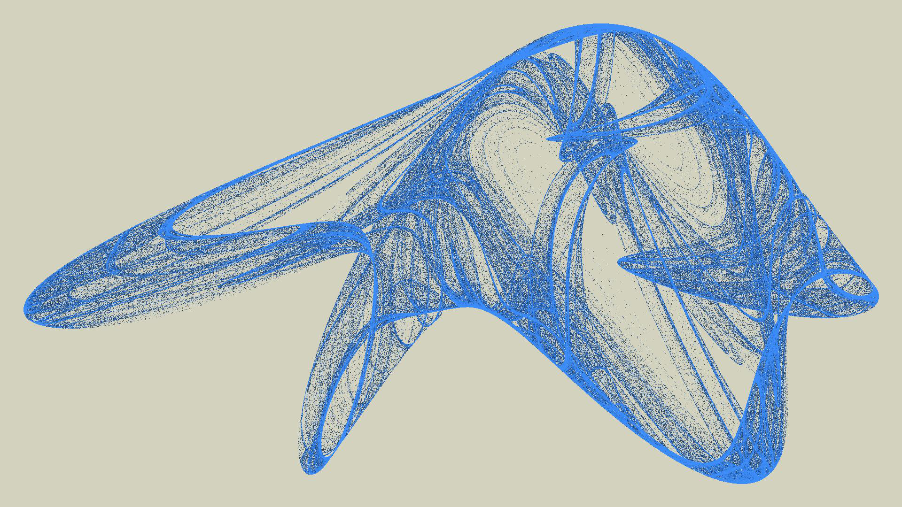
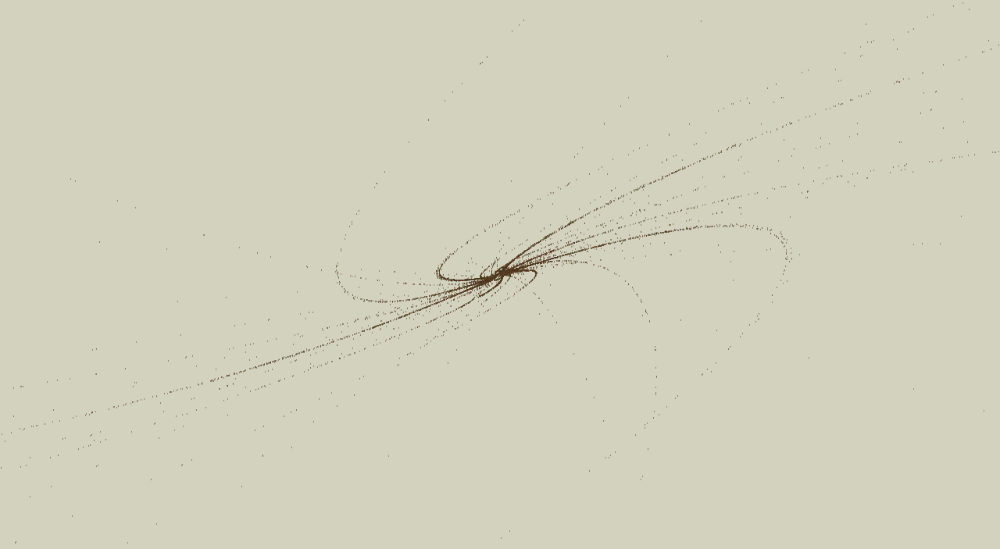

Existen sistemas de ecuaciones que se comportan de maneras impredecibles. Podemos usarlos para dibujar. Cuando parece que hay ciertos lugares que atraen a los puntos del dibujo les podemos decir atractores.
En un atractor extraño las ecuaciones definen la ubicación de cada punto partiendo del punto anterior, de manera recursiva. Es imposible predecir de antemano cómo va a quedar. Cambios muy pequeños en los coeficientes de las ecuaciones producen dibujos completamente distintos.
